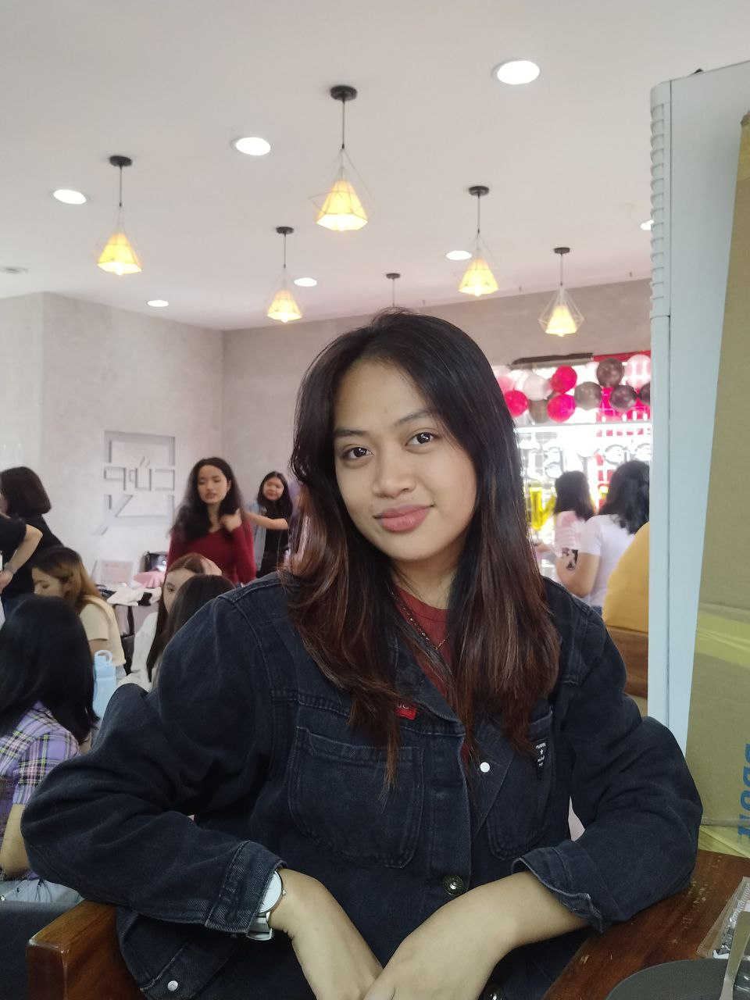

MBR
HOME
ABOUT
RESUME
A B O U T M E
Back

|
Hi! I'm Marjulliana B. Romance, or Marj for short, and I'm 20 years old from Novaliches, Quezon City.
I am a second-year college student at the Polytechnic University of the Philippines—Open University studying
office administration. This was not my first option, but I grabbed at the chance because I had passed at PUP.
Also, my father want me to study there so I did. So far, all I want to do is finish this course and start working.
My dream course was nursing or any medical-related career, however it is too expensive.
I am an ambivert type of person. I can be an extrovert when I am surrounded by good people, but if not,
I can be an extrovert. I enjoy walking at night, especially if my mind is not at peace. It makes me feel sane for
a while. I have two Persian cats; their names are Coby and Snow. They are my emotional support whenever I feel
down and lonely. I prefer rubbing them than talking to someone about how I feel. I also love listening to music
because it helps me release the feelings that I can't express. And lastly, I do love McDonald's. It makes
everything alright.
MBR - 2023
|
{kind=link}